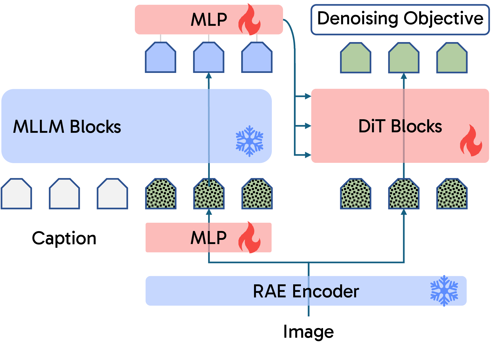
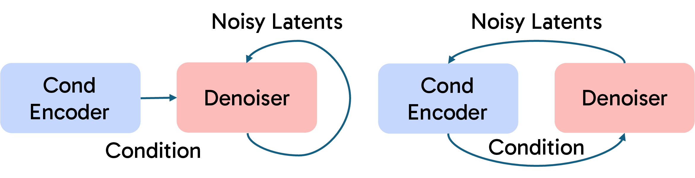
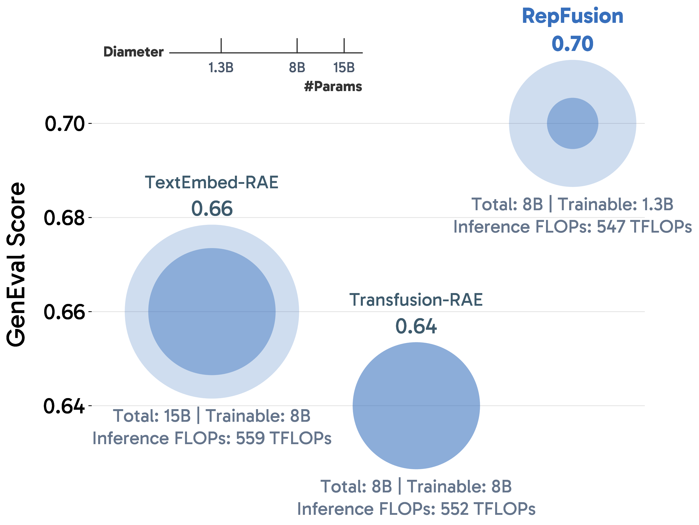
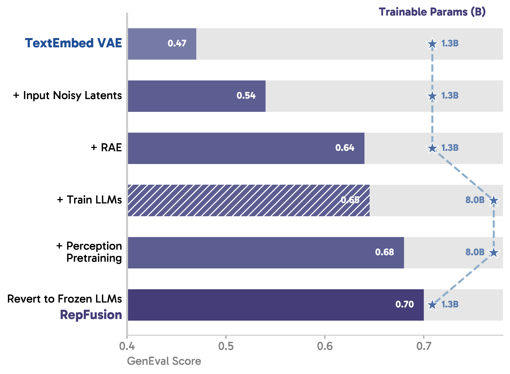
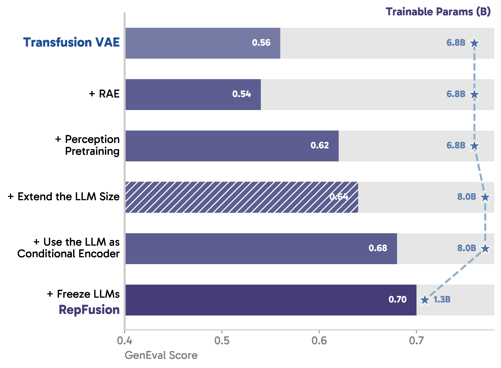
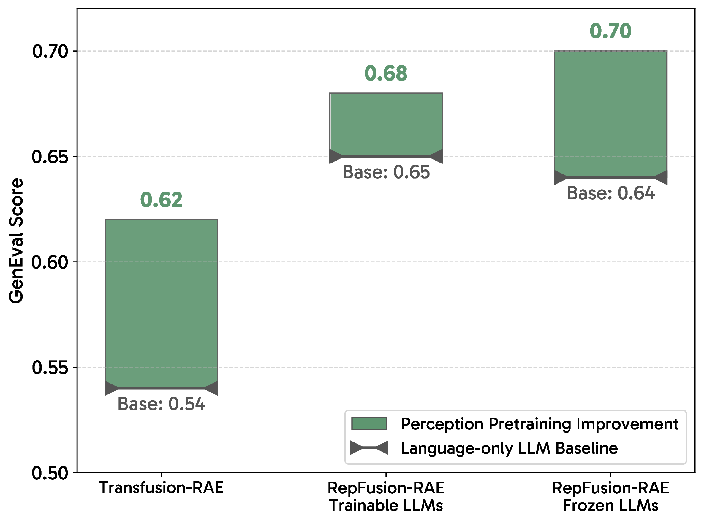
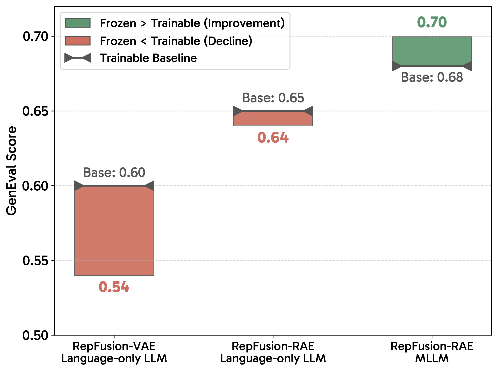
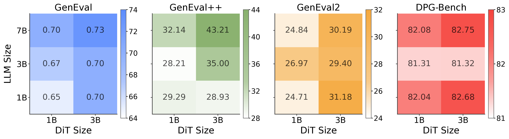

Leveraging Multimodal Priors for Denoising in Representation Space
Modern text-to-image models already carry huge LLMs, but usually use them once as text encoders.
RepFusion asks a different question: if generation happens in semantic
representation space, can the frozen MLLM become part of the denoising loop?
Noisy visual tokens: The MLLM sees the current RAE latent, not just the prompt.
Frozen prior: Keep the perception-pretrained MLLM intact; train the projector and DiT.
Useful test-time compute: Recompute conditioning because the visual state changes every step.
Baseline gains: Benchmarks are used to validate the mechanism, while the main story remains the controlled analysis.
Figure 1: Moving from VAEs to RAEs unlocks pretrained language priors.
The RAE transition separates RepFusion from text-only and unified-denoiser baselines, suggesting that the representation space is what lets the MLLM prior become useful.
The short version: RAEs move image generation into a semantic feature space that MLLMs already know how to read.
RepFusion exploits that alignment by feeding the current noisy visual representation into a frozen MLLM at every denoising step, then using the MLLM output to guide a DiT.
Finding
RAE space unlocks the prior
The clearest improvement appears when denoising moves from compressed VAE latents into semantic RAE representations.
Finding
Conditioning must see the sample
Rerunning a static MetaQuery-style encoder costs more but does not help; feeding evolving noisy latents does.
Finding
Freeze the perception model
Fine-tuning helps language-only LLMs, but preserving a perception-pretrained MLLM is better here.
Finding
Spend fewer trainable params
Under matched budgets, allocating capacity to a frozen conditional encoder improves over training larger newly initialized denoisers.
Click any icon to jump to the corresponding section.
Core Idea RepFusion: Make the Encoder Dynamic
Most T2I systems use an LLM as a one-shot text encoder: read the prompt, freeze the condition, let the denoiser do the rest.
RepFusion changes only one assumption. Because RAE latents are semantic visual representations, the MLLM can also read the noisy latent currently being denoised.
The condition therefore becomes state-dependent rather than static.

Figure 2: Overview of RepFusion.
Blue modules are frozen; red modules are trainable. A noisy RAE latent is projected into the MLLM input space, the frozen MLLM reads it together with the caption, and its visual-token outputs condition the DiT.
The recipe is deliberately small: project the noisy RAE tokens into the MLLM space, add the timestep signal, keep the LLM backbone frozen, and train the projector plus DiT. The final hidden states corresponding to the noisy visual tokens become the DiT condition. Since the noisy latent changes during sampling, the MLLM recomputes a different condition at each step.
The interface is also simple. RAE tokens and DiT tokens are aligned, so RepFusion uses token-wise AdaLN modulation instead of adding a cross-attention stack. Each MLLM output token predicts the scale, shift, and gate for its matching DiT token.

Figure 3: A new axis for test-time scaling.
MetaQuery-style conditioning is static: rerunning it with more FLOPs does not expose the MLLM to a new visual state. RepFusion instead makes the condition depend on the current noisy latent.
The important distinction: extra inference compute helps only when it reads something new.
Learnable-query and timestep-only controls do not close the gap, because the MLLM never observes the evolving visual state.
Feeding the noisy representation gives the encoder an input-dependent signal to reinterpret at every step.
Key Evidence Spend Parameters on Priors, not Just Denoisers
A common instinct is to make the denoiser larger. The controlled comparison below suggests a sharper allocation: keep a strong pretrained MLLM as the conditional encoder, then train a much smaller denoiser around it. At similar inference FLOPs, RepFusion fine-tunes only a projector and a 1.3B DiT, yet beats baselines that train roughly 8B denoising parameters.

Figure 4: Parameter efficiency.
Circle diameter denotes total parameters; the inner disk denotes trainable parameters. The win comes from using pretrained encoder capacity, not from training the largest new denoiser.
Where the Gain Comes From
Two ablation paths tell the same story. The big jumps come from moving into RAE space and turning a perception-pretrained MLLM into the conditional encoder. Extra joint optimization is not the main driver; preserving the MLLM prior is.


Figure 5: Roadmap of building RepFusion from (left) TextEmbed and (right) Transfusion. Bars show GenEval scores; a hatched bar means the modification is not adopted in the final model.
Benchmark Checks Do the Mechanistic Gains Translate?
The benchmark section is a validation layer for the analysis above. We use standard T2I and reasoning evaluations to check whether the controlled gains over TextEmbed, Transfusion, and learnable-query baselines survive in the full system. The emphasis is on consistent improvement over the relevant baselines, not on ranking models for its own sake.
Prompt alignmentThe full system preserves the gains observed in controlled RAE and conditioning ablations.
Robust evaluationGenEval2 is included to check that improvements are not only tied to older benchmark protocols.
Reasoning promptsWISE probes whether the frozen MLLM prior remains useful for knowledge-heavy generation.
Methods
GenEval ↑
GenEval++ ↑
GenEval2 ↑
DPG-Bench ↑
Prior Work
Transfusion
0.63
–
–
–
MetaQuery-XL
0.80†
–
–
82.05
BLIP-3o 8B
0.84
0.307
–
81.60
OmniGen2
0.80
0.325
–
83.57
BAGEL
0.82
0.371
23.1†
84.03
Scale-RAE
0.83
–
–
79.70
RepFusion
RepFusion w/ RAE Decoder
0.73
0.432
30.2
82.75
RepFusion w/ Diffusion Decoder
0.78
0.443
29.9
84.41
RepFusion-SFT w/ RAE Decoder
0.85
0.707
35.1
84.17
RepFusion-SFT w/ Diffusion Decoder
0.87
0.669
34.9
85.11
Table 1: Text-to-image generation results. †denotes rewritten prompts. For GenEval2, we report the prompt-level Soft-TIFAGM metric.
Figure 6: Visual samples of text-to-image generation.RepFusion follows prompts involving fine-grained attributes, object relations, camera motion, and rendered text.
Reasoning-Based Generation
Because the MLLM remains frozen, the generator can still draw on world knowledge and reasoning behavior already present in the backbone. WISE is included as an additional stress test for that design choice.
Model
Cultural
Time
Space
Biology
Physics
Chemistry
Overall
MetaQuery-XL
0.56
0.55
0.62
0.49
0.63
0.41
0.55
BLIP-3o 8B
–
–
–
–
–
–
0.62
BAGEL
0.44
0.55
0.68
0.44
0.60
0.39
0.52
RepFusion-SFT w/ RAE Decoder
0.55
0.53
0.70
0.51
0.57
0.41
0.55
RepFusion-SFT w/ Diff. Decoder
0.65
0.63
0.79
0.63
0.67
0.44
0.64
Table 2: Reasoning-based generation on WISE. Bold marks the highest value within the table.
Analysis Why Perception Pretraining Matters
Reading noisy RAE latents is still a perception problem. A language-only LLM can help, but a perception-pretrained MLLM is consistently better because it already knows how to model structured visual tokens. That prior transfers from clean visual understanding to noisy representation denoising.

Figure 7: Effect of multimodal perception pretraining.
Replacing a language-only LLM with a perception-pretrained MLLM improves both Transfusion-RAE and RepFusion, indicating that perception pretraining is a transferable prior for diffusion in RAE space.
Freeze, don't overfit the prior. Fine-tuning helps when the backbone is language-only, but it can degrade a perception-pretrained MLLM in the RAE setting. The surprising takeaway is practical: once the MLLM already knows how to perceive visual tokens, preserve that prior and train the lightweight interface around it.

Figure 8: Freezing vs. fine-tuning the LLM backbone.
Fine-tuning helps a language-only LLM, but freezing is better for a perception-pretrained MLLM in RepFusion-RAE.
Scaling Compute Helps When It Reads a Changing Signal
RepFusion has two inference-time axes: the frozen MLLM that repeatedly reads the noisy representation, and the DiT that predicts the denoising update. Increasing either component can help, but the preferred allocation still depends on the metric and budget.

Figure 9: MLLM and DiT co-scaling.RepFusion benefits from both scaling axes across GenEval, GenEval++, GenEval2, and DPG-Bench.
Under iso-FLOPs budgets, larger DiTs are often the better within-family choice. But against TextEmbed, which spends nearly all sampling compute on a static-condition DiT, RepFusion remains stronger. The point is not that the MLLM should consume all compute; it is that some compute should go to an encoder that sees the evolving sample.
LLM Size
DiT Size
FLOPs Split (LLM | DiT)
GenEval ↑
GenEval++ ↑
GenEval2 ↑
DPG-Bench ↑
~280T inference FLOPs
1.0B
3.2B
26% | 74%
0.70
0.289
31.18
82.68
3.0B
1.3B
71% | 28%
0.67
0.282
26.97
81.31
~540T inference FLOPs
7.0B (TextEmbed)
8.0B
3% | 97%
0.64
0.321
26.60
81.34
1.0B
7.3B
13% | 87%
0.70
0.443
30.84
82.58
3.0B
5.5B
37% | 63%
0.69
0.382
30.67
82.20
7.0B
1.3B
85% | 15%
0.70
0.321
24.84
82.08
Table 3: Iso-FLOPs comparison of compute allocation between the MLLM and DiT within RepFusion, with TextEmbed as a reference baseline. Bold marks the highest value within each FLOPs budget.
Takeaways What This Suggests
Use a representation space the MLLM can understand
RAEs make denoising latents semantic enough for pretrained multimodal priors to matter.
Make the condition input-dependent
Repeated encoder compute only helps when the encoder sees the evolving noisy sample.
Preserve strong perception priors
Freezing the MLLM can outperform joint optimization when the backbone is already multimodally pretrained.
Scale the encoder and denoiser together
DiT capacity remains important, but static text conditioning leaves useful MLLM compute on the table.
RepFusion turns the conditional encoder from a static prompt reader into an active denoising-time module. The broader message is simple: if the generation space is semantic enough, frozen MLLMs can contribute more than text embeddings.
BibTeX
@article{pan2026repfusion,
title = {RepFusion: Leveraging Multimodal Priors for Denoising in Representation Space},
author = {Pan, Xichen and Singh, Aashu and Shukla, Satya Narayan and
Fan, Xiangjun and Mishra, Shlok Kumar and Xie, Saining},
journal = {arXiv preprint},
year = {2026}
}